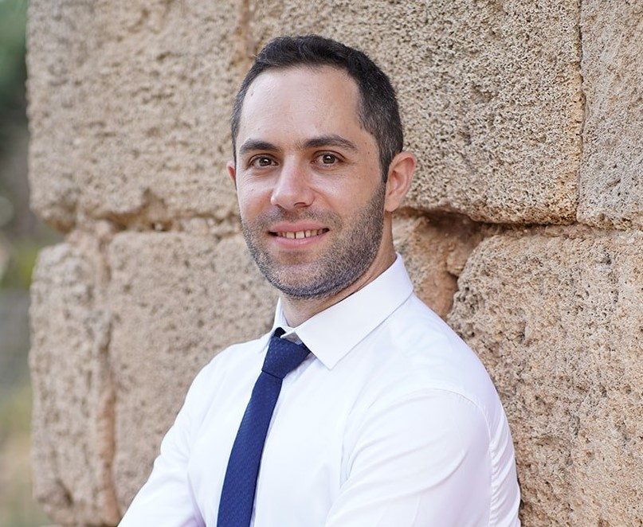

|

|
Automation developer with 6 years of experience in planning and developing automation solutions, tools and web applications for testing software, monitoring resources, troubleshooting problems and manage regressions Bachelor of Computer Science from Technion. Currently work as Automation and DevOps Engineer at PTC. |